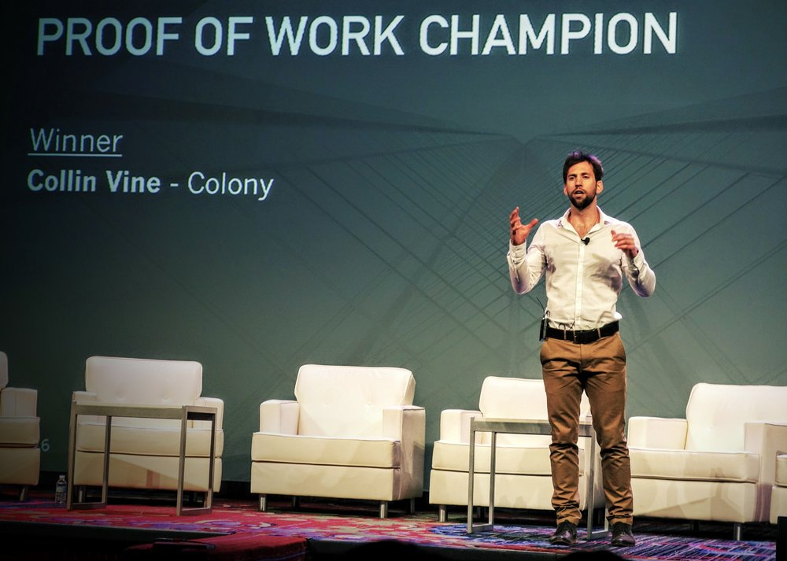

Hey, I'm Collin.
I'm a 2x founder of Zirtual and then Colony. Currently I'm building new AI products at Google.
I'm an operational & UX-focused product leader who enjoys building things: companies, cultures, teams, products, and ultimately value.
That's me after receiving a $10k check for winning a startup pitch competition. You can also see me doing a handstand, hangin' with my family, or you can check out my homemade sourdough.

After several months in the job market and with 4 good offers on the table, I took a job as a PM at YouTube at the end of Feb.
It's completely different from what I expected. Given the size of Google/YouTube, I was expecting the work to be narrow and—relative to my founder experience—boring. Yet, I expected the training and this-is-how-we-build-products to be world class. Neither is true. My scope and area of ownership is large which I love. However, I've been surprised to experience how immature the org is.
Overall I'm enjoying it and it is a great place for me right now. I get to go deep into my craft of building products, get paid very well relatively to startup life, and experience new things amidst a great group of people.
At the end of September, I decided to leave Colony, the company I co-founded, after 4.5 years. I probably have an entire post explaining why and how I came to that conclusion, but suffice it to say it was the right time for me to move forward.
My main focus now is coding. For about 2-years, I’ve been learning to code part time. I’ve completed a Udacity nanodegree, built a chrome extension, and have done some other online courses and small side projects. Yet I have never felt like I had the depth that I wanted.
That’s when I heard about Launch School. Their mastery-based pedagogy really spoke to me. I’m also in the job market for the first time in my adult life. I passed through Google's hiring process and was approved by their hiring committee earlier this year. I’m currently in the team match / offer stage with them.